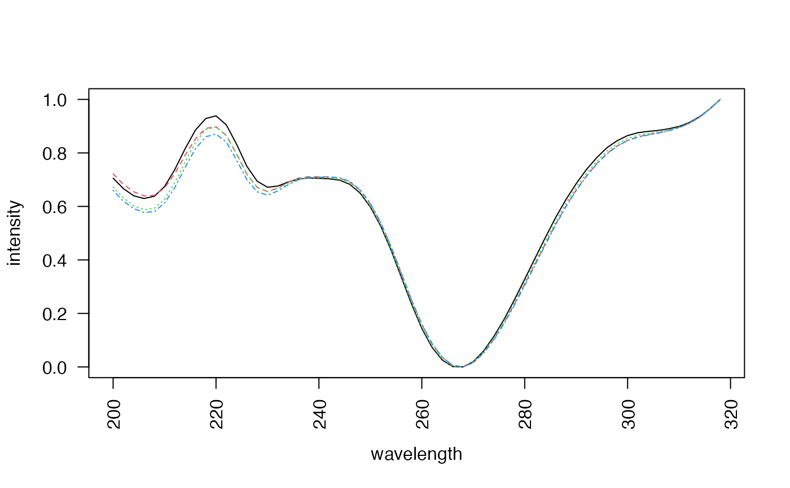

Plot multiple for a given peak in peak table. Wrapper for
plot_spectrum.
Usage
plot_all_spectra(
peak,
peak_table,
chrom_list = NULL,
chrs = "all",
plot_spectrum = T,
export_spectrum = TRUE,
scale_spectrum = TRUE,
overlapping = TRUE,
verbose = FALSE,
...
)Arguments
- peak
The name of a peak to plot (in character format)
- peak_table
The peak table (output from
get_peaktablefunction)- chrom_list
A list of profile matrices, each of the same dimensions (timepoints x components).
- chrs
Vector of chromatograms to plot.
- plot_spectrum
Logical. If TRUE, plots the spectrum of the chosen peak.
- export_spectrum
Logical. If TRUE, exports spectrum to console. Defaults to FALSE.
- scale_spectrum
Logical. If TRUE, scales spectrum to unit height.
- overlapping
Logical. If TRUE, plot spectra in single plot.
- verbose
Logical. If TRUE, print verbose output to console.
- ...
Additional arguments to plot_spectrum.
Examples
data(Sa_warp)
pks <- get_peaks(Sa_warp, lambda="220")
pk_tab <- get_peaktable(pks)
#> Warning: More than one peak of one injection in the same cluster
#> for component 1.
#> Keeping only the most intense one.
plot_all_spectra(peak="X13", peak_table = pk_tab, overlapping=TRUE)

#> 119 121 122 458
#> [1,] 0.705605352 0.721774728 0.672891424 0.660076184
#> [2,] 0.666566235 0.682533059 0.631632120 0.619582145
#> [3,] 0.639828325 0.654786683 0.601894646 0.592153389
#> [4,] 0.629604967 0.639355186 0.587599489 0.577283828
#> [5,] 0.637963109 0.641340942 0.592875079 0.580645029
#> [6,] 0.674024870 0.668852880 0.626967058 0.612621223
#> [7,] 0.738361334 0.723060403 0.689335863 0.671238033
#> [8,] 0.815897295 0.791311580 0.766935180 0.745974891
#> [9,] 0.885247535 0.852627468 0.839457859 0.815727784
#> [10,] 0.928512942 0.891675045 0.887117083 0.860325005
#> [11,] 0.938740580 0.897953705 0.896685989 0.870467047
#> [12,] 0.904839810 0.864976043 0.864807199 0.840381165
#> [13,] 0.832461387 0.796210949 0.796486903 0.773555707
#> [14,] 0.749809123 0.720294898 0.720677163 0.700302824
#> [15,] 0.694362411 0.671373716 0.671447848 0.654540550
#> [16,] 0.671735502 0.655726308 0.655097887 0.642136997
#> [17,] 0.676023188 0.668479800 0.666663536 0.657618901
#> [18,] 0.691122190 0.690293529 0.687032258 0.681328519
#> [19,] 0.702322168 0.705652809 0.702326826 0.699365798
#> [20,] 0.706357756 0.711263767 0.707665732 0.707463402
#> [21,] 0.705195711 0.711001858 0.707459945 0.709000774
#> [22,] 0.703346988 0.710580838 0.706704134 0.709937793
#> [23,] 0.698321510 0.705997836 0.701378712 0.707295501
#> [24,] 0.682770633 0.691455298 0.685764236 0.693669358
#> [25,] 0.649877245 0.660940382 0.654149556 0.662473131
#> [26,] 0.598053333 0.609362764 0.602349204 0.611730692
#> [27,] 0.527156850 0.539126972 0.531770959 0.540381548
#> [28,] 0.437672765 0.451043107 0.442704635 0.451147181
#> [29,] 0.336572751 0.351248278 0.342554416 0.351208133
#> [30,] 0.235116235 0.250507867 0.241342544 0.250562431
#> [31,] 0.144149256 0.159167163 0.149788855 0.159643612
#> [32,] 0.072954163 0.086122858 0.077684992 0.087315804
#> [33,] 0.025353145 0.035340636 0.028842247 0.035574906
#> [34,] 0.001476891 0.006476636 0.002880655 0.006377858
#> [35,] 0.000000000 0.000000000 0.000000000 0.000000000
#> [36,] 0.019658639 0.016587678 0.018184894 0.015771991
#> [37,] 0.059489212 0.052742726 0.055795723 0.050987060
#> [38,] 0.114010628 0.103687770 0.108710291 0.101321171
#> [39,] 0.178097577 0.165225019 0.171953432 0.162387163
#> [40,] 0.251178908 0.235203276 0.241546832 0.231103376
#> [41,] 0.328079302 0.309591315 0.316750949 0.304787928
#> [42,] 0.406033317 0.384377694 0.393436182 0.380392216
#> [43,] 0.483521210 0.459829627 0.469612859 0.455844260
#> [44,] 0.558001034 0.532987556 0.542989156 0.530133758
#> [45,] 0.625170760 0.600783052 0.611406314 0.598320559
#> [46,] 0.685045014 0.661465130 0.672097471 0.658942915
#> [47,] 0.738002174 0.714187717 0.723582228 0.712243260
#> [48,] 0.782401236 0.760021885 0.768876333 0.758852220
#> [49,] 0.819799224 0.797921297 0.806466714 0.796493697
#> [50,] 0.845953580 0.826671941 0.834348160 0.825567143
#> [51,] 0.864888152 0.846779679 0.854262296 0.846004770
#> [52,] 0.875532989 0.860099596 0.866156946 0.858919916
#> [53,] 0.880515467 0.868705216 0.872827477 0.867266177
#> [54,] 0.884136642 0.875082949 0.878091861 0.874268498
#> [55,] 0.890240063 0.883300591 0.885477153 0.882679217
#> [56,] 0.898994374 0.895189731 0.896187831 0.894446950
#> [57,] 0.913480875 0.910673972 0.911141089 0.910612468
#> [58,] 0.935441880 0.933572485 0.933757200 0.933867174
#> [59,] 0.964839552 0.964213757 0.964361527 0.964537731
#> [60,] 1.000000000 1.000000000 1.000000000 1.000000000